CS-1 twochannels · built in
Start: play the keys; it's a CS-80-style poly with two layers.
- PRESETS: its sounds and your presets
- SELECT: the ribbon (bends)
- ALGORITHM: the next tone or page
- Press harder: aftertouch


fm1-dock is one firmware with many synths in it. You install it once; the synths are modules you switch between with HOME, and you add or remove them from the page. It runs on the M-VAVE FM-1 and on the M-Vave SMK-37.
The synth's name, then 2CPU 44%: both cores running, and how much of the time the last sound block
took. 1CPU: one core (after a crash, until power-off). OCT +0: the octave.
BT: a Bluetooth device is connected.
What each control does in the module list, in OPTIONS, and in a synth. In a synth most controls are the synth's own: its card below says what they do.
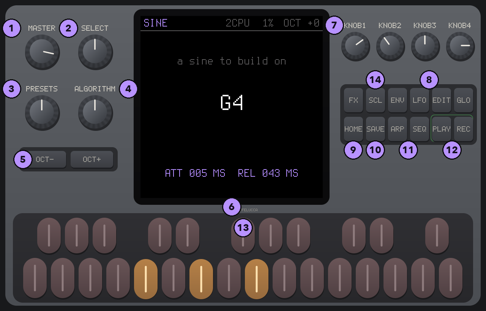
| # | Control | In the module list | In OPTIONS | In a synth |
|---|---|---|---|---|
| 1 | MASTER | The volume, everywhere (with MASTER CC7 it also sends CC 7) | ||
| 2 | SELECT | Move up and down | Move; on the EQ page, pick a band | The synth's |
| 3 | PRESETS | Move up and down | Move | The synth's: usually its sounds |
| 4 | ALGORITHM | – | On the EQ page, turn the band | The synth's |
| 5 | OCT− OCT+ | The octave. Held at power-on: safety nets | ||
| 6 | The screen | The top line (above), then the list or the synth's own screen | ||
| 7 | KNOB1–4 | – | On the EQ page, KNOB1–3 turn LOW, MID, HIGH | The synth's; with KNOBS CC on they send MIDI instead |
| 8 | FX ENV LFO EDIT GLO | – | – | The synth's pages |
| 14 | SEL (the 2nd button of the top row) | Load the synth | Change the line | The synth's |
| 9 | HOME | Load the synth | Back to the list | Tap: the synth's. Hold alone 1.5 s: the module list (PROPHET and SINE: a tap) |
| 10 | SAVE | – | – | The synth's (saving its presets) |
| 11 | ARP SEQ | – | – | The synth's |
| 12 | PLAY REC | PLAY: load the synth | PLAY: change the line | The synth's: starts drones and sequences |
| 13 | The keys | Play, with velocity and pressure on the force-sensed rows (in the synths that use them) | ||
The FM-1 also has a TRS MIDI IN jack: notes from a keyboard or sequencer play the synth (and go on to USB and Bluetooth with MIDI THRU on).
fm1-dock treats the SMK-37 as an FM-1 with extras. The middle 27 keys are the FM-1's keys; the outer keys, pads, faders and wheels play the synth as MIDI and go out over USB too. Where a synth's manual says KNOB1–4, use K5–K8. The labels printed under the keys and pads (CHN, PRE, 1/4, ▶ ❚❚ …) belong to M-Vave's own firmware: fm1-dock doesn't use them.
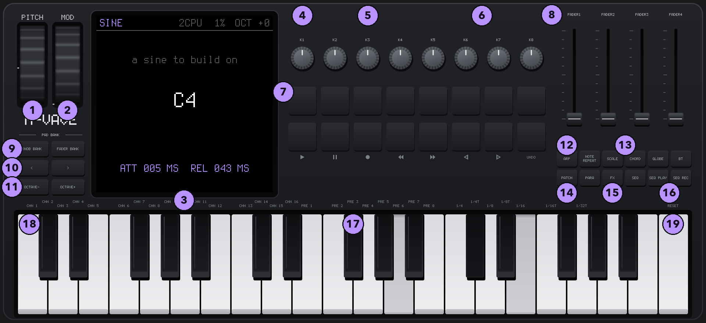
| # | SMK-37 | Is the FM-1's | What it does |
|---|---|---|---|
| 1 | Pitch wheel | – | Pitch bend to the synth |
| 2 | Mod wheel | – | CC 1 (modulation) to the synth |
| 3 | The screen | The screen | As on the FM-1 |
| 4 | K1 | MASTER | The volume |
| 5 | K2 · K3 · K4 | SELECT · ALGORITHM · PRESETS | Move in the list; the synth's in a synth |
| 6 | K5 · K6 · K7 · K8 | KNOB1 · 2 · 3 · 4 | The synth's knobs; EQ bands on the EQ page |
| 7 | 16 pads | – | Notes 36–51 on channel 10, with velocity (bottom row 36–43, top row 44–51, left to right); a hit lights the pad |
| 8 | 4 faders | – | CC 70, 71, 72, 73 on channel 1 |
| 9 | KNOB BANK · FADER BANK | – | The synth’s, if it uses them (Scintilla: FADER BANK what the faders do, KNOB BANK the layer); unused otherwise |
| 10 | < · > | – | The synth’s, if it uses them (Scintilla: the previous / next page); unused otherwise |
| 11 | OCTAVE− · OCTAVE+ | OCT− · OCT+ | The octave. At power-on: OCTAVE− the USB rescue, OCTAVE+ the safe start |
| 12 | ARP | ARP | The synth's |
| 13 | NOTE REPEAT · SCALE · CHORD · GLOBE · BT | LFO · SEL · ENV · GLO · SAVE | SCALE loads the synth picked in the list; the rest are the synth's |
| 14 | PATCH | HOME | The module list (in most synths: hold it alone 1.5 s) |
| 15 | PARA · FX · SEQ | EDIT · FX · SEQ | The synth's |
| 16 | SEQ PLAY · SEQ REC | PLAY · REC | Start drones and sequences; load the synth in the list |
| 17 | Keys F3–G5 (the middle 27) | The keys | Play, with velocity (the unit's own factory curves) |
| 18, 19 | Keys C3–E3 and G♯5–C6 | – | Notes below and above, as MIDI, with the octave and velocity |
The SMK-37 has no MIDI IN jack, so MIDI THRU and the TRS test don't apply. It has more room for add-ons than the FM-1: 416 KiB in two areas (288 + 128). Before installing on an SMK-37, read SMK37.md (make a full backup first).
Past the last synth in the list. SEL changes a line, HOME goes back. They apply to every synth and are kept.
| Line | What it does | When you want it | Default |
|---|---|---|---|
| CC7 VOLUME | MIDI CC 7 sets the level of whatever plays, on top of MASTER (the line shows the level when it is under 127) | A computer or controller rides the volume | OFF: CC 7 goes to the synth |
| MASTER CC7 | Turning MASTER sends CC 7 on the keys' channel, over USB and Bluetooth | MASTER should set a computer's volume too | OFF |
| MIDI CH | ALL, or 1–16: only that channel gets in (the synth hears it as channel 1), and the keys send on it | Several instruments share one MIDI line | ALL (OberVave's tracks want ALL) |
| LOCAL | OFF: the keys only send MIDI, the synth plays only what comes in | Recording into a computer that plays it back (no doubled notes) | ON |
| EQ | LOW (150 Hz), MID (1 kHz), HIGH (6 kHz), ±12 dB, for every synth. SEL opens its page: SELECT picks, ALGORITHM or KNOB1–3 (K5–K7) turn, SEL switches it on/off or puts a band back to 0 dB | Tame or brighten the speaker or a PA | OFF (a boost can clip a loud synth) |
| KNOBS CC | KNOB1–4 send CC 74, 71, 73, 72 (cutoff, resonance, attack, release) over USB and Bluetooth, on a synth's own screen (in the list they move the list) | The FM-1 as a controller for a computer synth | OFF |
| AFTERTOUCH | SEL steps through AS IS, CHANNEL, MOD WHL and FILTER: how pressing a held key harder (and an external keyboard's aftertouch; the SMK-37's own keys sense none) reaches the synth. AS IS: as it comes, per key. The others: the hardest-pressed key, as channel pressure, the mod wheel (CC 1) or the filter (CC 74) | Pressure on a synth that ignores it: MOD WHL for vibrato, FILTER to open it up | AS IS |
| MIDI THRU | The TRS jack's MIDI (not clock or SysEx) goes on to USB and Bluetooth; the synth plays it too | A hardware keyboard through the FM-1 into a computer | OFF |
| ABOUT | SEL opens a page: the fm1-dock version (a release's with its source, 0.8.2 (abc1234); any other build is its source, 2dcbfbf+), the model, one or two CPU cores, the chip, the flash chip's id and size, the RAM for synths, the room left for add-ons (all of it and the largest piece), the Bluetooth address, and every synth with its version and size. SELECT scrolls, HOME goes back | Asking for help, or checking what a unit runs | – |
| BLUETOOTH | Bluetooth MIDI. OFF; ON (advertising as FM1-DOCK xxxx); LINKED (connected); READY (connected and listening); HELD (saved ON, but not started after a safe or failed start: switch it again); NO CAL (the unit's radio calibration from the stock firmware isn't there: the radio is never started); MISSING (the Bluetooth part of fm1-dock is damaged: install again) | Play from a phone, a tablet or a computer without a cable | OFF |
Bluetooth: turning it on pauses the sound for about 0.2 s while the radio calibrates. On a Mac: Audio MIDI Setup → MIDI Studio → the Bluetooth button → Connect. In Chrome or Edge, Test MIDI connects directly. More in the README.
How to get a sound out of it, the controls worth trying first, and where its author explains the rest. Each synth is its author's own program: its manual is the full story.
Start: play the keys; it's a CS-80-style poly with two layers.

Start: play the keys: the 1981 Elka Synthex, 80 factory sounds.

Start: play the keys; four tracks of an analog-style poly with arpeggiator, sequencer and effects.
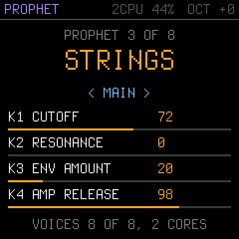
Start: play the keys; a Prophet-5 Rev 4, eight voices.
tools/dock.py send FILE.syx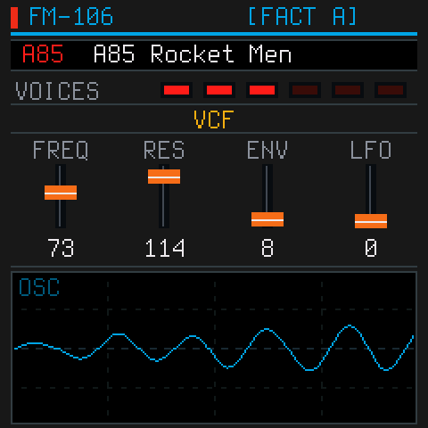
Start: play the keys; the Roland Juno-106, six voices, 128 factory presets.

Start: play the keys for its synth; its songs and their GoatTracker editor are on the knobs.
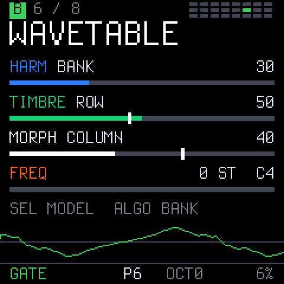
Start: hold a key: a mono macro-oscillator, 24 models.
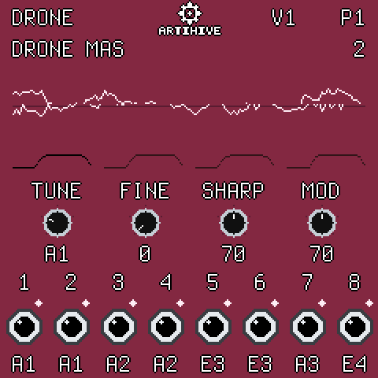
Start: silent until you press PLAY: eight drones on four FM pairs.

Start: it plays itself: pads, bells on tape loops, a gliding bass.
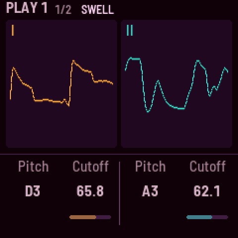
Start: press PLAY: two drones fade in and drift.

Start: hold a black key for a chord, then strum the white keys.
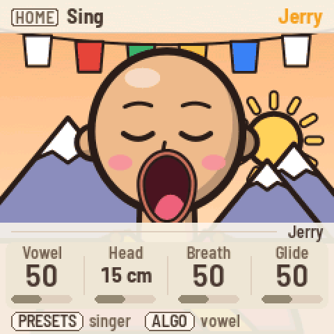
Start: play the keys: a singer. Velocity and pressure shape the voice.
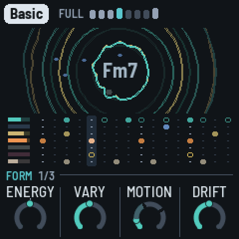
Start: it plays itself once its launch screen is over: dub techno.
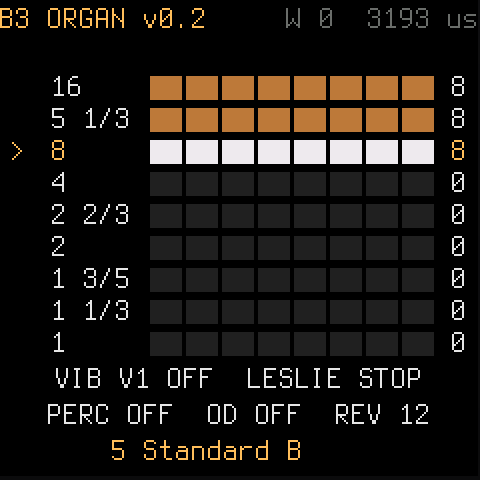
Start: play chords: a tonewheel organ.
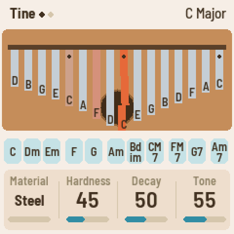
Start: the white keys are tines; the black keys roll chords.

Start: play the keys: a plain sine.
Hold the key from before you switch on until the screen shows something.
A synth that can't keep up is stopped and the sine plays, so USB keeps working. Play fewer notes, pick a lighter
sound, or check that the top line says 2CPU. A synth that crashes twice in a row is skipped at the
next start until you pick it again.
After a crash with both cores, fm1-dock runs on one until power-off. Right after installing fm1-dock the first start can show it too. Switch off and on: both cores come back.
Use the right adapter (if nothing arrives, try the other type: A or B). Test MIDI's TRS test times every note through the jack and tells you if it works.
The free room can be in pieces: the total is enough, but no single piece is. Remove an add-on next to a gap and add the new one first; then add the removed one again. (0.9 will pack them together for you.)